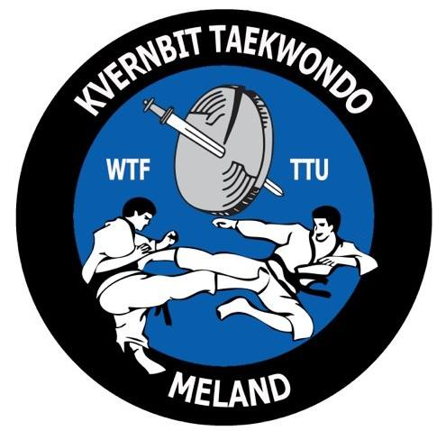
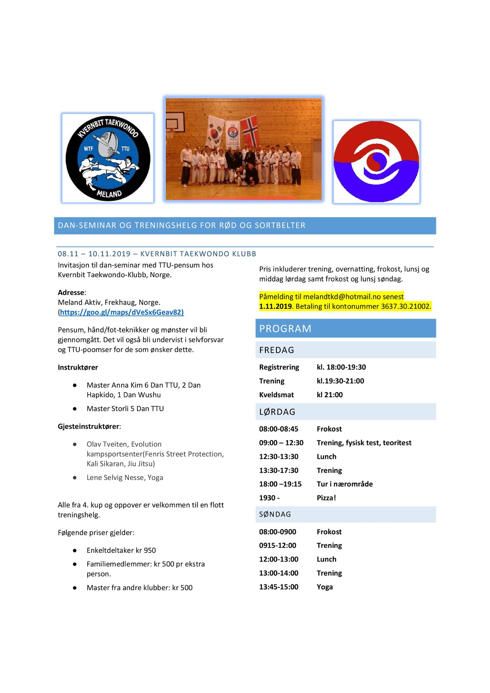

Arrangement
Danseminar i Kvernbit Taekwondo 8.-10. november

Kvernbit Taekwonod-klubb inviterer til dan-seminar med TTU-pensum 8.-10. november
Pensum, hånd-/fot-teknikker og mønster vil bli gjennomgått. Det vil også bli undervist i selvforsvar og TTU-poomser. Åpent for alle utøvere fra 4. cup (rødt belte) og oppover. Vi er flere av instruktørene som skal reise. Instruktørene vil denne gang være Master Anna Kim og Master Storli, i tillegg til gjesteinstruktører Olav Tveiten (selvforsvar) og Lene Selvig Nesse (Yoga). [su_table responsive="yes" fixed="yes" class="table { border-collapse: collapse; width: 50%; } th, td { text-align: left; padding: 8px; } tr:nth-child(even){background-color: #f2f2f2} th { background-color: #4CAF50; color: white; }"]| Produkt | Pris |
|---|---|
| Enkeltdeltaker | kr 950,- |
| Familimedlemmer: | kr 500,- pr ekstra person |
| Master | kr 500,- |
Påmelding:
Vi sender samlet påmelding fra klubben innen 1.11.2019. Gi beskjed til en instruktør hvis du ønsker å være med!